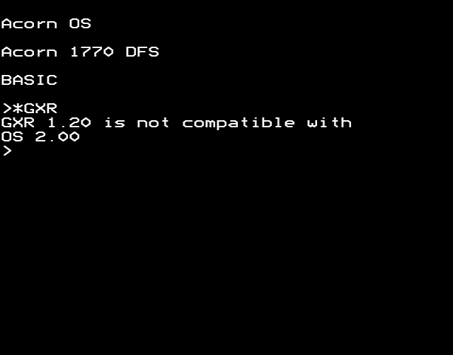
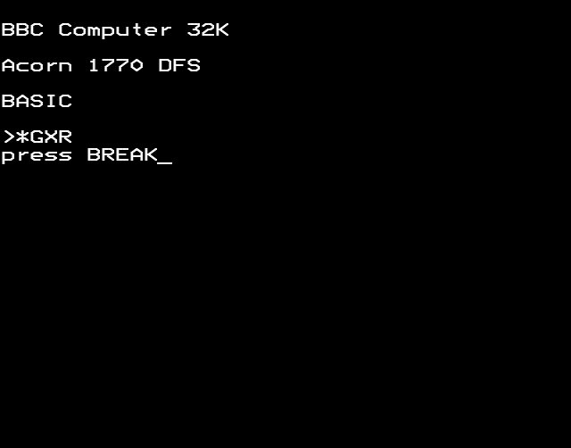

*GXR; *NOGXR; *FLOOD; *NOFLOOD; *SSPACE; *SNEW - 237 bytes (1.4%)
- §1. The GXR is not compatible with the OS
- §2. *GXR
- §3. *NOGXR
- §4. *FLOOD
- §5. *NOFLOOD
- §6. *SSPACE n
- §7. *SNEW
- §8. Generate error
§1. The GXR is not compatible with the OS.
Displays a message.

.notCompatible = $899d JSR .printInlineCounted display following message !byte 31 number of characters to display !text "GXR " + .version + " is not compatible with" string to display LDA #0 } then show *FX 0 information LDX #0 } [NOTE: could be TAX saving 1 byte] JMP .OSBYTE }
Enables the GXR ROM, prompting the user to press BREAK to complete the process.

.starGXR = $89c7 LDA #129 } LDX #0 } *FX 129,0,255 LDY #255 } Read machine type JSR .OSBYTE } !if MACHINE = BBC_B { INX check for BBC B, OS 1.00 or 1.20 [NOTE: this ROM won't work with OS 1.00, but no check is made for this] } else if MACHINE = BBC_B_PLUS { CPX #$FB check for B+ } else if MACHINE = ELECTRON { CPX #$01 check for Electron } else { +unknown_machine } BNE .notCompatible if (wrong machine) then branch LDX .currentlySelectedROM } LDA #1 } Store 1 in the ROM workspace byte. STA .romWorkspaceBytes,X } This marks GXR as 'becoming } active'. .pressBREAK = $89da JSR .printInlineCounted display following message !byte 11 number of characters to display !text "press BREAK" string to display - JMP - wait forever!
Disables the Graphics Extension ROM, prompting the user to press BREAK to complete the process.
.starNoGXR = $89ec LDX .currentlySelectedROM } LDA #0 } Mark GXR as not active STA .romWorkspaceBytes,X } BEQ .pressBREAK ALWAYS branch
Enables flood filling, prompting the user to press BREAK to complete the process.
.starFlood = $89f5 LDY #.workspaceOffsetOptions LDA (.privateWorkspaceLow),Y workspace[options] AND #$C0 BNE .return1 if (flood already enabled or pending) then return Mark flood as pending LDA #$40 STA (.privateWorkspaceLow),Y workspace[options] = $40 DEY Y=#.workspaceOffsetTotalPagesWithoutSprites Add 2 pages to private workspace for flood fill CLC } LDA #2 } ADC (.privateWorkspaceLow),Y } workspace[pages without sprites] } += 2 STA (.privateWorkspaceLow),Y } BNE .pressBREAK ALWAYS break .return1 = $8a0b RTS
Disables flood filling, prompting the user to press BREAK to complete the process.
.starNoFlood = $8a0c LDY #.workspaceOffsetOptions LDA (.privateWorkspaceLow),Y workspace[options] AND #$C0 BEQ .return1 if (flood already disabled and not pending) then return Mark flood disabled LDA #0 STA (.privateWorkspaceLow),Y workspace[options] = 0 Take off two pages from private workspace for no flood fill LDY #.workspaceOffsetTotalPagesWithoutSprites [NOTE: could be DEY to save one byte] SEC LDA (.privateWorkspaceLow),Y SBC #2 subtract 2 pages STA (.privateWorkspaceLow),Y Take off two pages from start of sprites SEC LDY #.workspaceOffsetSpriteStartPage LDA (.privateWorkspaceLow),Y STA .vduTempStoreDD tempStoreDD = workspace[start page] SBC #2 STA (.privateWorkspaceLow),Y workspace[start page] -= 2 STA .vduTempStoreDB tempStoreDB = workspace[start page] If no pages reserved for sprites, branch ("press BREAK") LDY #.workspaceOffsetSpritePages LDA (.privateWorkspaceLow),Y BEQ .pressBREAK if (workspace[sprite pages] == 0) then branch ("press BREAK") Copy all sprite data down two pages STA .vduTempStoreDF tempStoreDF = workspace[sprite pages] LDA #0 STA .vduTempStoreDA tempStoreDA = 0 STA .vduTempStoreDC tempStoreDC = 0 STA .vduTempStoreDE tempStoreDE = 0 JSR .blockCopyMemoryIncrementing JMP .pressBREAK
Allocate space for sprites, prompting the user to press BREAK to complete the process. On Entry: XY: address of the rest of the command line
.starSSpace = $8a44 JSR .read8BitNumberIntoA read requested number of pages for sprites LDY #.workspaceOffsetSpritePages CMP (.privateWorkspaceLow),Y STA (.privateWorkspaceLow),Y PHP push flags Read DEY Y=#.workspaceOffsetOptions LDA (.privateWorkspaceLow),Y ASL carry = flood enabled LDA #$80 } ROL } ROL } A=1 (if flood is disabled) or 3 } (flood enabled) ADC .vduTempStoreDE DEY STA (.privateWorkspaceLow),Y PLP pull flags BCS + if(new space >= old space) then branch JSR .starSNew clear existing sprites + JMP .pressBREAK wait for BREAK key
Clear all sprites
.starSNew = $8a64 LDY #.workspaceOffsetNumberOfSprites LDA #0 STA (.privateWorkspaceLow),Y set number of sprites to zero .resetCurrentSpriteAddress = $8a6a LDY #.workspaceOffsetCurrentSpriteAddressLow } LDA #0 } STA (.privateWorkspaceLow),Y } set current sprite address to zero INY } STA (.privateWorkspaceLow),Y } RTS
Copy the error details into page 1 along with a BRK instruction. Call it to generate an error.
.generateError = $8a74 PLA } STA .vduTempStoreDA } PLA } store the 'return address-1' in } temp store STA .vduTempStoreDB } LDY #0 loop counter - INY store the error details at $0101 upwards LDA (.vduTempStoreDA),Y STA .page1Start,Y BNE - STA .page1Start store zero at $0100, which is a BRK instruction JMP .page1Start jump to the BRK instruction